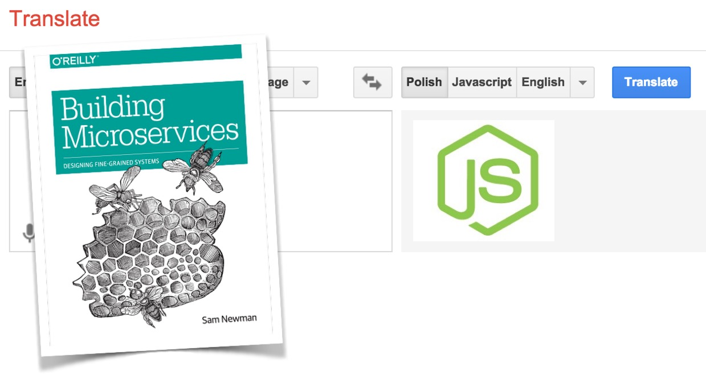

Szkolenie: Nowoczesna architektura aplikacji Web oparta o node.js
3 dni 80% warsztatów 20% wykładów
Mikrousługi, chmura, ciągłe wdrażanie oprogramowania na produkcję mocno wpłynęły na to jak
współczesne zespoły
programistyczne budują systemy informatyczne.
W tym nowym świecie mamy coraz większe
zapotrzebowanie na
bardzo wydajne serwisy, które w efektywny sposób wykorzystują zasoby serwera. To właśnie w tym
kontekście
najlepiej sprawdza się node.js.
Czego się nauczysz podczas szkolenia? (wersja krótka)
Jak przetłumaczyć teoretyczne koncepcje architektury mikrousług na świat node.js.

Czego się nauczysz podczas szkolenia? (wersja długa)
- Jak zrozumienie działania pętli zdarzeń wpływa na to jak myślimy o naszych programach
- Jak programowanie z this i bez this wpływa na czytelność Twojego kodu
- Jak tworzyć testowalne API i aplikacje webowe w express.js (routing, middleware, obsługa błędów, komunikacja z bazą MongoDB)
- Jak testować i debugować aplikacje node.js (mocha, supertest, siege)
- Jak nadać strukturę nietrywialnym aplikacjom node.js z użyciem wzorca Dependency
Injection
(bez
frameworków)

- Jak refaktorować kod asynchroniczny z callbacków na promisy

- Jak budować aplikacje i zarządzać zależnościami w npm
- Jak budować potoki wdrożeń dla aplikacji node.js i wdrażać je na produkcję (na przykładzie Heroku)
- Jak zautomatyzować kod infrastruktury Heroku za pomocą kodu JS
- Jak tworzyć interfejs użytkownika dla mikrousług z użyciem wzorca Backend For Frontend (różne opcje integracji serwisów: client side, edge side i server side include)
- Jak radzić sobie z problemami sieciowymi i pisać stabilne mikrousługi
(timeout, retry,
cachowanie, circuit
breaker, prawo Postela w praktyce)

- Jak odchudzić aplikacje node.js i przerzucić część odpowiedzialności na infrastrukturę (lekkie podejście do logowania, metryk, cross-app tracing, rejestracji i odkrywania)
- Jak orkiestracja i choreografia wpływają na mikro i makro architekturę
- Jak zabezpieczyć kto korzysta z naszej mikrousługi w użyciem basic auth i JWT (JSON Web Token)
- Jak i kiedy zastąpić WebSockety przez dużo prostsze Server-Sent Events